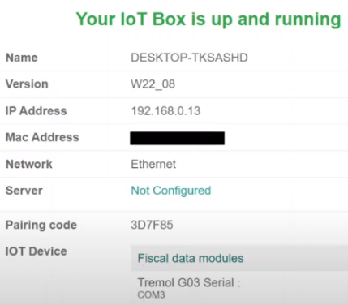

Kenya¶
Configuration¶
Install the following modules to get all the features of the Kenyan localization:
Name |
Technical name |
Description |
|---|---|---|
Kenyan - Accounting |
|
Installing this module grants you access to the list of accounts used in the local GAAP and the list of common taxes (VAT, etc.). |
Kenyan - Accounting Reports |
|
Installing this module grants you access to improved accounting reports for Kenya, such as Profit and Loss and Balance Sheets. |
You also have to install the Kenya Tremol Device EDI Integration package to be able to report your taxes to the Kenya Revenue Authority (KRA) using the Tremol G03 Control Unit:
Name |
Technical name |
Description |
|---|---|---|
Kenya Tremol Device EDI Integration |
|
Installing this module integrates with the Kenyan G03 Tremol control unit device to report taxes to KRA through TIMS. |

Kenyan TIMS integration¶
The Kenya Revenue Authority (KRA) has decided to go digital for tax collection through the Tax Invoice Management System (TIMS). As of December 1st, 2022, all VAT-registered persons should comply with TIMS. The goal is to reduce VAT fraud, increase tax revenue, and increase VAT compliance through standardization, validation, and transmission of invoices to KRA on a real-time or near real-time basis.
All VAT-registered taxpayers should use a compliant tax register. Odoo decided to develop the integration of the Tremol G03 Control Unit (type C), which can be run locally through USB. This device validates invoices to ensure financial documents meet the new regulations and send the validated tax invoices directly to KRA. Installing a proxy server that provides a gateway between users and the internet is required.
Installing the proxy server on a Windows device¶
Go to odoo.com/download, fill out the required information and click Download.

Once it is loaded on your computer, a wizard opens. You have to read and agree with the terms of the agreement. On the next page, select the type of install: Odoo IoT. Then, click Next and Install. Once completed, click Next. Check the Start Odoo box to be redirected to Odoo automatically, and then click Finish.
A new page opens, confirming your IoT Box is up and running. Connect your physical device Tremol G03 Control Unit (type C) to your laptop via USB. In the IoT Device section, check that your Tremol G03 Control Unit (type C) appears, confirming the connection between the device and your computer.
Note
If the device is not detected, try to plug it in again or click on the Restart button in the top right corner.
Sending the data to KRA using the Tremol G03 Control Unit¶
As a pre-requisite, check out that the Kenyan Accounting modules are installed on your database. Then, go to , and check that the control Unit Proxy Address matches the address of the IoT box.
To send data to KRA, create a new invoice by going to and clicking New Invoice. Upon confirmation of a new invoice, the Send invoice to Fiscal Device button appears. Clicking on it sends the invoice details to the device and from the device to the government. The CU Invoice Number field is now completed in your invoice, confirming the information has been sent.
The Tremol G03 Fiscal Device tab contains fields that are automatically completed once the invoice is sent to the government:
CU QR Code: Url from the KRA portal which reflects a QR code.
CU Serial Number: reflects the serial number of the device.
CU Signing Date and Time: The date and time when the invoice has been sent to KRA.
If you click on Send and Print, a .pdf of the invoice is generated. The Kenyan Fiscal Device Info is mentioned on the document.
Note
To verify KRA has received the invoice information, take the CU Invoice Number and enter it in the Invoice Number Checker section on Kenya Revenue Authority website. Click Validate and find the invoice details.